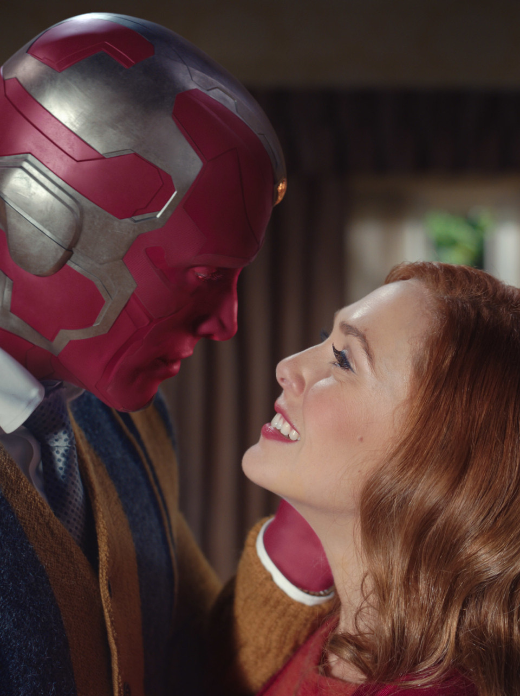

Familia
- Hermano: Pietro Maximoff (Quicksilver)
- Pareja: Vision
- Hijos: Billy Maximoff y Tommy Maximoff
Filosofía
"El poder no define quién eres. Lo que haces con él, sí."
Contacto
Nacimiento: 10 de febrero de 1989
Nacionalidad: Sokovia, Europa del Este
Residencia: Variable (Multiverso)
wanda.maximoff@avengers.orgIdiomas
- Sokoviano - Nativo
- Inglés - Avanzado
- Latín mágico - Avanzado
- Runas antiguas - Avanzado
Historia Completa
Wanda Maximoff nació en Sokovia junto a su hermano Pietro. Tras perder a sus padres en un bombardeo, desarrolló un profundo trauma que marcaría su vida.
Posteriormente fue expuesta a la Gema de la Mente, amplificando sus habilidades latentes y conectándola con la Magia del Caos. Se convirtió en una de las entidades más poderosas del universo.
Formó parte de los Avengers, luchó contra Ultron, participó en la defensa de Wakanda y estuvo presente en la batalla final contra Thanos, donde demostró un poder capaz de superarlo.
Tras la pérdida de Vision, creó involuntariamente una realidad alternativa en Westview donde vivió junto a él y sus hijos Billy y Tommy. Este evento demostró que Wanda es una Nexus Being, una entidad cuyo poder afecta directamente al multiverso.
El estudio del Darkhold expandió aún más su dominio sobre la magia, aunque también puso en riesgo su equilibrio emocional.
Línea Temporal
- 2015 — Ingreso en Avengers
- 2018 — Batalla de Wakanda
- 2023 — Derrota de Thanos
- 2024 — Incidente Westview
Citas Célebres
- "No puedes controlar el miedo, solo enfrentarlo."
- "He perdido demasiado."
- "No soy un monstruo, soy una madre."